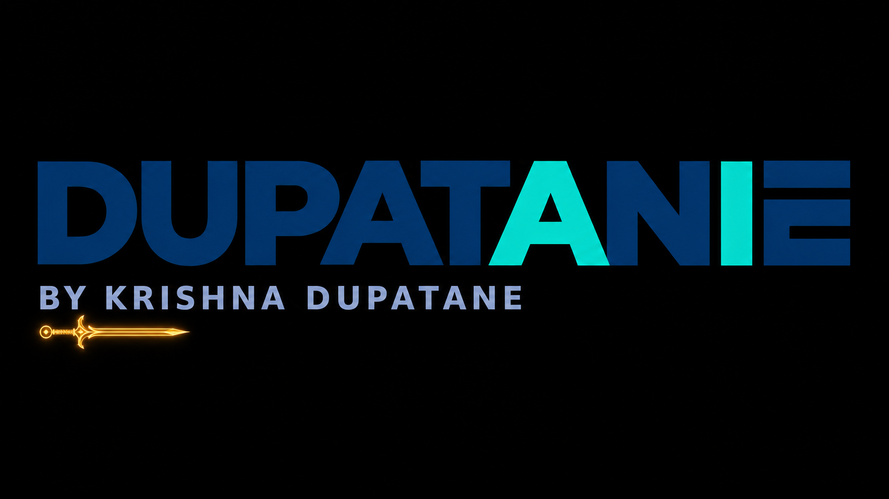

4K ABR streaming
The HLS master exposes 3840×2160, 1920×1080, 960×540 and 640×360 renditions. The player shows Auto and manual quality options.

← Back to hands-on labsAWS · VIDEO ON DEMAND · EDGE DELIVERY
A working DUPATANE-branded cloud video player with a custom HTTPS domain, private S3 origin, MediaConvert HLS renditions, CloudFront delivery and manual/automatic quality selection.
Source video → Private S3
↓
AWS Elemental MediaConvert
↓
HLS master + 4 rendition playlists + segments
↓
Private S3 origin ← CloudFront OAC
↓
CloudFront (HTTPS + ACM certificate)
↑
GoDaddy subdomain CNAME
↓
DUPATANE CinemaPlay player (HLS.js / native HLS)The HLS master exposes 3840×2160, 1920×1080, 960×540 and 640×360 renditions. The player shows Auto and manual quality options.
GoDaddy DNS points a product beta subdomain to CloudFront. An ACM-issued certificate enables HTTPS, and the default root object serves watch.html at /.
CloudFront OAC protects the S3 origin; scoped IAM controls HTML uploads and cache invalidations. Public CloudFront viewing is still unlisted, not authenticated.
Diagnosed S3 access denial, invalidation permissions, DNS resolver mismatch, HLS CORS behavior and stale HTML deployment paths.
2160p · 3840×2160 · 22.26 Mbps avg (41.96 peak) 1080p · 1920×1080 · 7.53 Mbps avg (14.87 peak) 540p · 960×540 · 2.46 Mbps avg ( 5.74 peak) 360p · 640×360 · 1.06 Mbps avg ( 2.15 peak)
Values are playlist metadata, not a measurement of a viewer's throughput. A screenshot of selecting 2160p does not independently prove decoded 4K frames or an uninterrupted full-film watch.
Read complete AWS deployment, DNS, IAM, HLS and troubleshooting runbook →